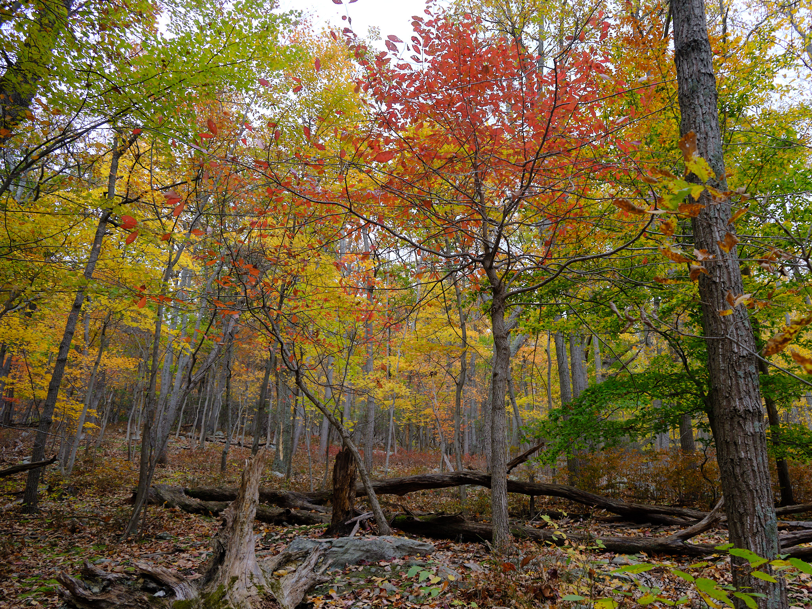
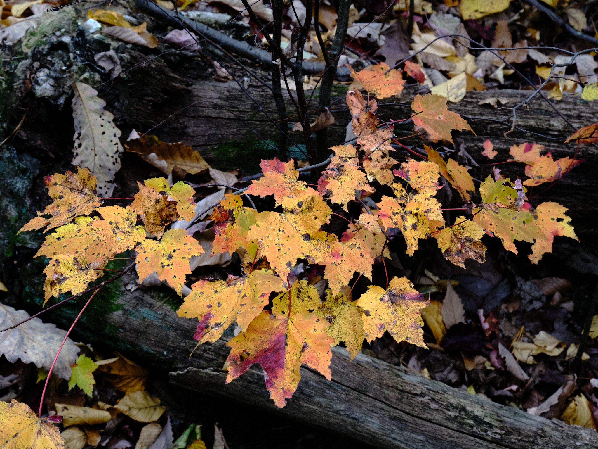
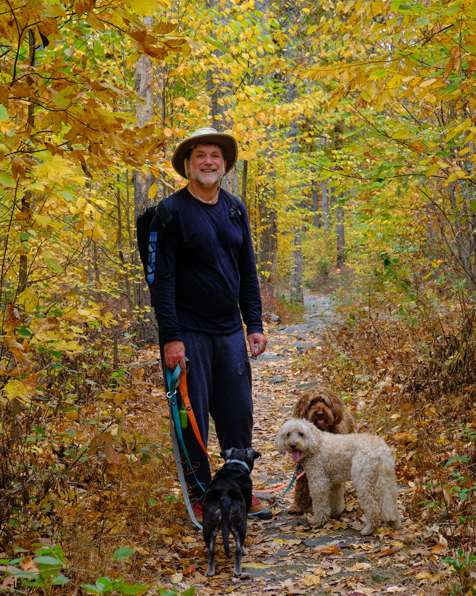

We’re really enjoying autumn in DC–and so are Sugar Baby, Ollie, and Lola, who have gotten their humans to take them on many fun day trips. This time we ventured a little to Cacoctin Mountain Park in Maryland north of DC. (Pronounced “Ka-Kock-tin”).
A little over an hour of driving brought us to the beginning of our hike. The sky was a bit gray and the temperatures in the 60s. Ollie was especially excited and pulling hard on his leash. After a mile of downhill, we had a mile of steep uphill, on a trail of granite stones covered in leaves.
Then Chimney Rock gave us a great overlook of the surrounding valleys.
Audrey found some beautiful leaves, and I found a beautiful Audrey!
After 2 miles to Chimney Rock, we had about 2 more miles of wandering through forests blazing with color. I especially liked this spot with a bright green foreground and gold and red leaves behind.

Here’s one of the leaves Audrey found on the forest floor.
She liked perfect leaves, and I liked these all full of holes

As we descending back to our car, I walked with all 3 dogs and Audrey took photos. Here she caught me walking with our canine friends through a swath of yellow.

After a picnic lunch, we stopped at a local apple orchard and bought super-fresh sweet-tart apples, a butternut squash and some local jam. If you are interested in a few more photos, you can click on those below to make them larger.